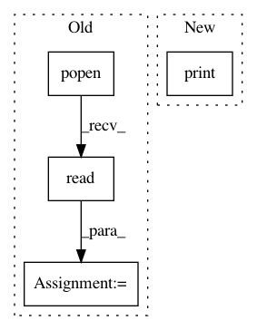

82c63c208dd9cf501685585949b470891dad9bfb,pynets/utils.py,,reorient_img,#Any#Any#,742
Before Change
img = "{}/img.nii.gz".format(out_dir)
shutil.copyfile(img_orig, img)
cmd = "fslorient -getqform " + img
qform = os.popen(cmd).read().strip("\n")
// Posterior-Anterior Reorientation
if float(qform.split(" ")[:-1][5]) <= 0:
img_PA = "{}/img_reor_PA.nii.gz".format(out_dir)
print("Reorienting P-A flip (img)...")
After Change
print(affine)
else:
img = img_orig
print("Image already in RAS+")
return img
In pattern: SUPERPATTERN
Frequency: 3
Non-data size: 4
Instances
Project Name: dPys/PyNets
Commit Name: 82c63c208dd9cf501685585949b470891dad9bfb
Time: 2019-06-05
Author: dpisner@utexas.edu
File Name: pynets/utils.py
Class Name:
Method Name: reorient_img
Project Name: jhfjhfj1/autokeras
Commit Name: 85da4149f4100ca0aab1257311a277dcd2e11e9e
Time: 2018-11-11
Author: lin.yang@tamu.edu
File Name: autokeras/utils.py
Class Name:
Method Name: get_device